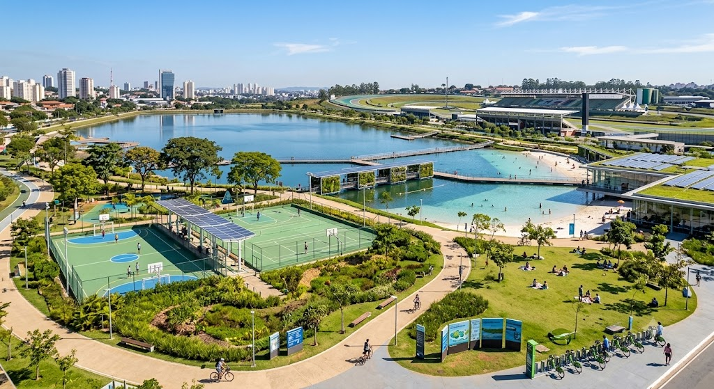
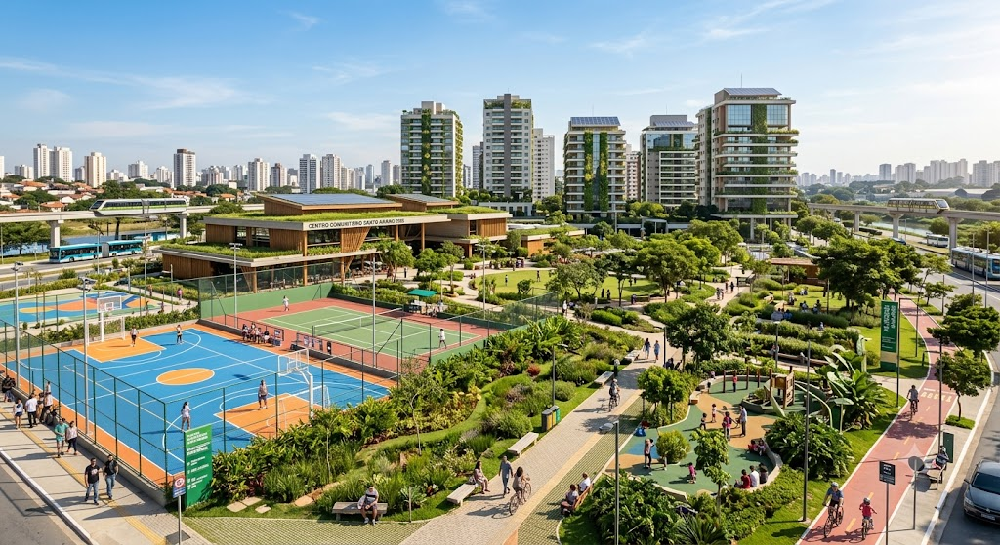

interlagos
Interlagos é conhecido pelo Autódromo de Interlagos e por suas áreas residenciais. A região recebe grandes eventos e possui parques e espaços de lazer.
Como imagino em 2035 Interlagos com parques modernos, ciclovias conectadas, energia limpa e espaços de lazer tecnológicos para a população.

Ver no Google Maps
Santo Amaro
Como é hoje: Amaro é uma região movimentada da zona sul de São Paulo. Possui muitos comércios, empresas, estações de transporte público e grande circulação de pessoas diariamente.
Como imagino em 2035 Santo Amaro com mais áreas verdes, transporte público inteligente, ruas mais seguras e prédios sustentáveis utilizando energia solar.

Ver no Google Maps